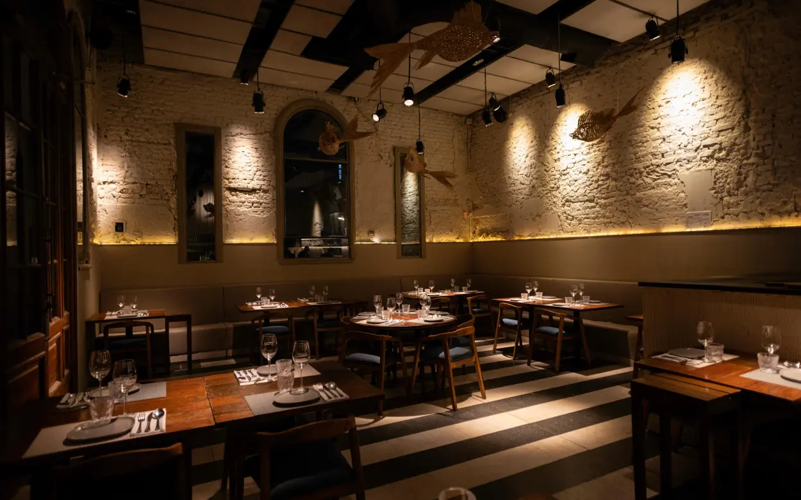

Tradición y sabor con identidad urbana.
Restaurante Sabor Urbano nació en el año 2020 con la idea de brindar una propuesta gastronómica cercana. Contamos con un equipo de cocina apasionado que busca combinar recetas tradicionales con un toque urbano.
Nuestra Propuesta
Los pilares que sostienen nuestro trabajo diario en el salón y la cocina.
Cocina con Identidad
Elaboraciones cuidadas que rescatan los sabores auténticos de nuestra tierra.
Atención Cálida
Nos enfocamos en brindar un trato cercano y profesional a cada cliente.
Compromiso
Cuidado de las materias primas, la higiene y el trabajo en equipo.
Trabajamos cada día con dedicación.
Nos encantan los encuentros y creemos que cada plato cuenta una historia. Por eso cuidamos cada detalle desde la selección de ingredientes hasta que llega a tu mesa.
- Ambiente familiar y distendido.
- Opciones renovadas cada temporada.
- Pasión por la buena gastronomía.
¿Venís a conocernos?
Descubrí nuestra carta completa y encontrá el plato ideal para tu próxima visita.
Ver menúNuestra Cocina
